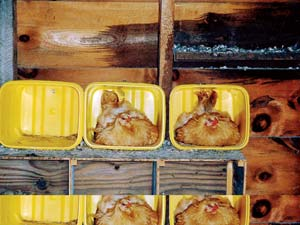

My wife and I live on a small farm. We raise chickens organically and sell their eggs. We also have six cats, so we go through a lot of cat litter - we usually buy the 35 pound buckets. Needless to say, we are swamped with large yellow plastic pails. So, I came up with a unique solution to reuse them.
We usually have about seven hens laying at the same time, so we needed more nest boxes. I realized that the plastic pails were the perfect solution! They went up in minutes and the hens like the high snug sides! Every year we have a new batch of laying hens, so now we always have enough nest boxes. They are a snap to clean, also!
|
 ROBERT GILLETTE Recycled kitty litter buckets make super nesting boxes. |
|
|